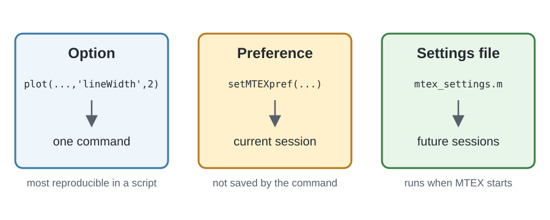

An option changes one command. A preference supplies a default for the whole MTEX session. The central file that sets preferences is mtex_settings.m.
The diagram separates the three scopes. An option is local to one command, while setMTEXpref changes the current session. Editing mtex_settings.m makes that setting take effect when MTEX starts in future sessions.

Inspect the current preferences
Pass a preference name to getMTEXpref to read its current value. With no input, the function returns a structure containing all current preferences. The available fields can depend on the installation.
getMTEXprefans =
struct with fields:
mtexPath: '/home/hielscher/mtex/master'
DataPath: '/home/hielscher/mtex/master/data'
version: 'mtex-7.0.0'
generatingHelpMode: 1
FontSize: 13
innerPlotSpacing: 19.5000
UTF8Output: 1
figSize: 0.5000
screenSize: [1920 1080]
sphericalAxisHeight: 370
axisBox: [1096 480]
axisArea: 368000
showMicronBar: 'on'
showCoordinates: 'off'
showRefFrame: 'off'
pfAnnotations: [function_handle]
outerPlotSpacing: 10
voronoiMethod: 'jcvoronoi'
markerSize: 10.5000
annotationStyle: {1×8 cell}
EulerAngleConvention: 'Bunge'
poleFigureExtensions: {1×30 cell}
EBSDExtensions: [".osc" ".ctf" … ] (1×13 string)
colors: [24×3 double]
SaveToFile: 0
CIFPath: '/home/hielscher/mtex/master/data/cif'
EBSDPath: '/home/hielscher/mtex/master/data/EBSD'
PoleFigurePath: '/home/hielscher/mtex/master/data/PoleFigure'
ODFPath: '/home/hielscher/mtex/master/data/ODF'
TensorPath: '/home/hielscher/mtex/master/data/tensor'
ExamplePath: '/home/hielscher/mtex/master/../examples'
ImportWizardPath: 'workpath'
defaultColorMap: [100×3 double]
colorPalette: 'CSS'
PhaseColorOrder: {1×17 cell}
stopOnSymmetryMissmatch: 1
mtexMethodsAdvise: 1
mosek: 0
insidepoly: 1
gridifyOnImport: 1
textInterpreter: 'LaTeX'
memory: 512000
FFTAccuracy: 0.0100
maxS1Bandwidth: 1024
maxS2Bandwidth: 512
maxSO3Bandwidth: 64
degreeChar: '°'
arrowChar: '→'Change one preference temporarily
For example, getMTEXpref('FontSize') reads the current default font size, while setMTEXpref('FontSize',14) would change it to 14 for this session. Documentation scripts should not change global figure preferences, so the executable example instead uses the preference for UTF-8 Command Window output.
The sequence saves the current value, changes it, reads the changed value, and restores the original. Keeping the restoration in the same section makes the example safe to run repeatedly.
oldUTF8Output = getMTEXpref('UTF8Output');
setMTEXpref('UTF8Output',false);
getMTEXpref('UTF8Output')
setMTEXpref('UTF8Output',oldUTF8Output);ans =
logical
0Make a preference persistent
Use the command edit mtex_settings to open the settings file. MTEX runs this file at startup, so an active setting there applies to every later session. The file groups related settings and documents the accepted values.
Settings in mtex_settings.m include:
- the font size, figure size, and marker size of every plot;
- whether an EBSD map shows a micron bar, coordinates, or a reference-frame indicator;
- the annotations drawn on spherical plots;
- the default colormap and the color palette used for phases;
- the Euler-angle convention, which is Bunge by default;
- which file extensions are offered for EBSD and pole figure files, and the initial location used by the import wizard;
- the paths to bundled CIF files, data sets, and examples;
- whether an imported map is gridified on import;
- whether a symmetry mismatch stops with an error or issues only a warning;
- which optional third-party solvers MTEX uses.
The file contains additional preferences beyond this summary.
Keep scripts reproducible
setMTEXpref changes only the running session. A permanent change must be placed in mtex_settings.m, but then the same MTEX script can behave differently on another computer. A script shared or published for others should therefore pass important settings as command options where possible instead of assuming a local configuration.
Plot alignment is not an ordinary preference
The alignment of plots is no longer an ordinary preference. It belongs to the reference frame in which the data is expressed. A reference frame identifies the coordinate system and basis of the data; it is distinct from the symmetry attached to that frame.
The frame supplies a plotting convention that determines how its axes are laid out on screen. See On-Screen Coordinate System Alignment to set that convention explicitly instead of relying on a legacy axis-direction preference.
References
This page documents MTEX configuration behavior and does not rely on an external method reference.
Next
Continue with Vectors to create the basic geometric objects used for directions, axes, and positions throughout MTEX.
Citing this page.
This page is part of the documentation of
MTEX, a free and open
source MATLAB toolbox for analyzing and modeling crystallographic textures.
It was written by The MTEX Developers and is published at
https://mtex-playground.github.io/GeneralConceptsConfiguration.html.
If you use MTEX, or reuse text or figures from this page, in your research,
please cite
F. Bachmann, R. Hielscher, H. Schaeben: Texture Analysis with MTEX - Free and Open Source Software Toolbox, Solid State Phenomena 160 (2010), 63-68. 10.4028/www.scientific.net/SSP.160.63
BibTeX
@article{bachmann2010mtex,
author = {F. Bachmann and R. Hielscher and H. Schaeben},
title = {Texture Analysis with MTEX - Free and Open Source Software Toolbox},
journal = {Solid State Phenomena},
volume = {160},
pages = {63-68},
year = {2010},
doi = {10.4028/www.scientific.net/SSP.160.63},
url = {https://doi.org/10.4028/www.scientific.net/SSP.160.63}
}Other papers describing specific MTEX methods are listed under Publications — please cite the one that best fits your application. The MTEX source code is licensed under the GNU General Public License v2.0; the text and figures of this documentation are licensed under CC BY 4.0, which permits reuse — including by automated systems — provided The MTEX Developers and this page are credited.